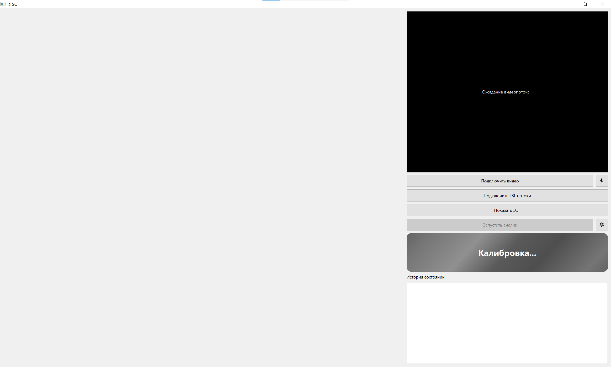
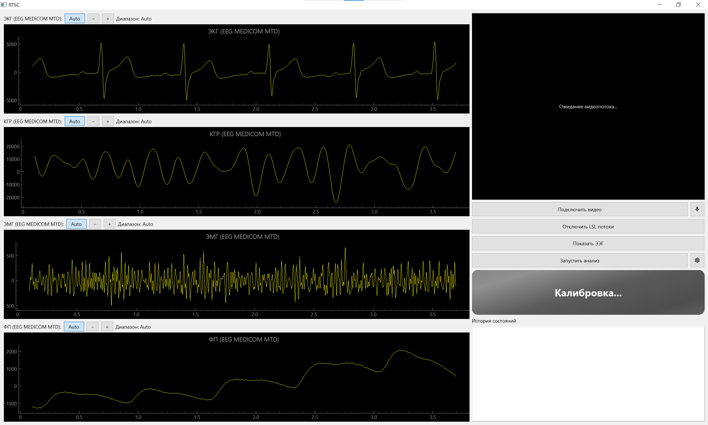
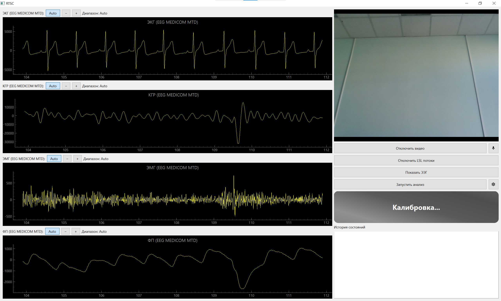
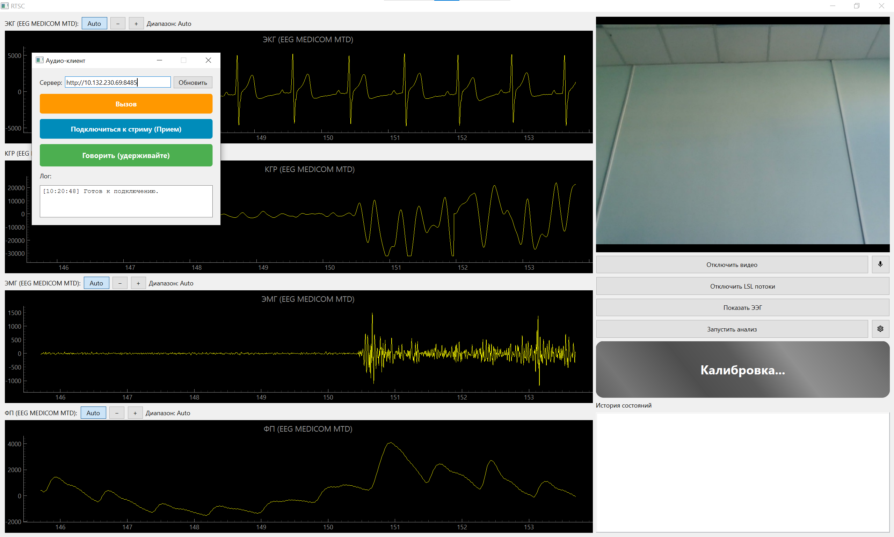
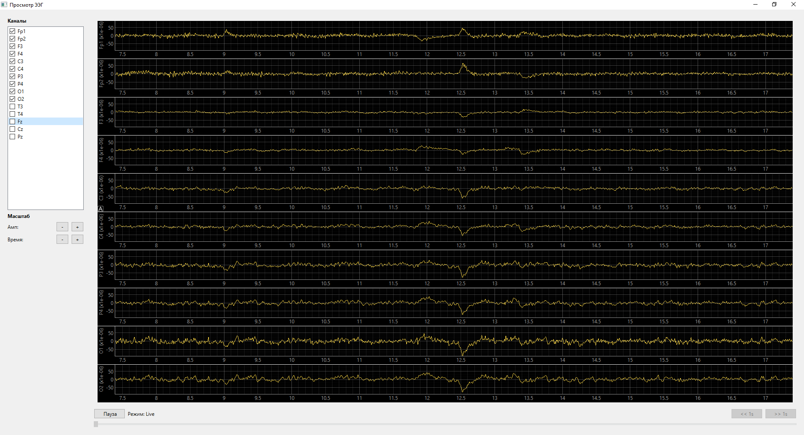
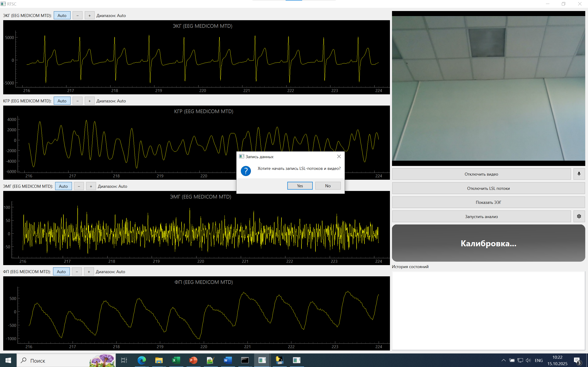
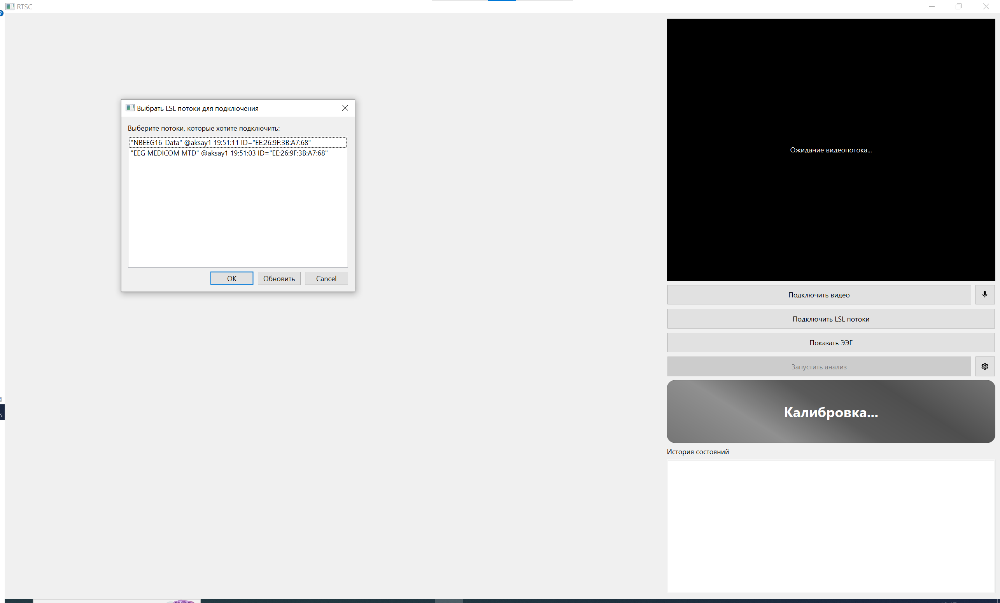
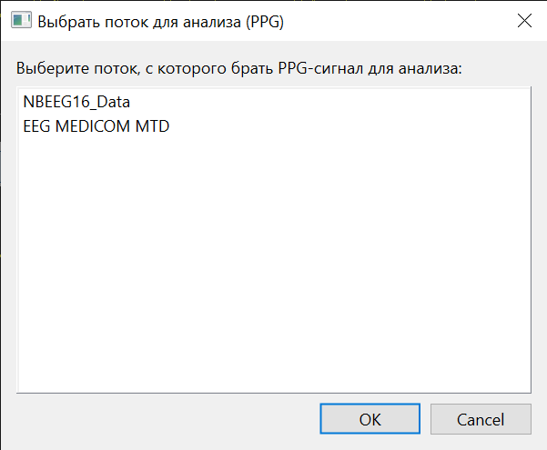
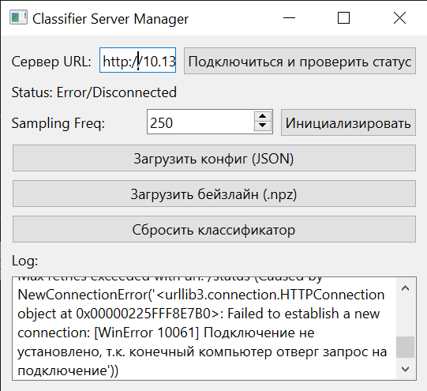

A software complex for real-time monitoring of an operator's functional state. Receives physiological signals — ECG, GSR, EMG, PPG, EEG — via the LSL protocol, displays them in real time, connects video and audio streams, and applies an ML classifier to assess the current state.








